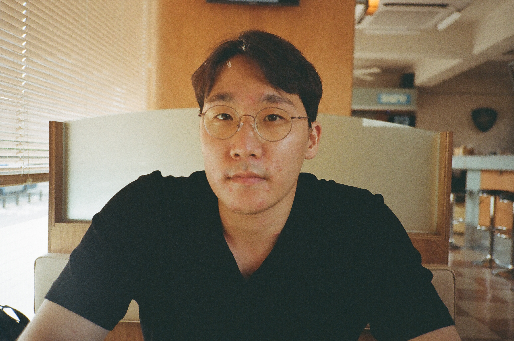

Won Seok Jang
PhD student, Computer Science
University of Massachusetts Lowell
컴퓨터공학 박사과정
매사추세츠 로웰 대학교 (UMass Lowell)
I'm a Computer Science PhD student at the University of Massachusetts Lowell, working on natural language processing for medicine. My research centers on patient-education chatbots and reinforcement learning for post-training large language models.
Before this I trained as a nurse (BSN) and earned an MS in biomedical informatics — the clinical side of the stack still shapes how I think about what makes these systems trustworthy.
저는 매사추세츠 로웰 대학교(University of Massachusetts Lowell) 컴퓨터공학 박사과정 학생으로, 의료 분야를 위한 자연어처리(NLP)를 연구하고 있습니다. 주된 관심사는 환자 교육용 챗봇과 대형 언어모델의 사후 학습(post-training)을 위한 강화학습입니다.
박사과정 이전에는 간호학사(BSN)를 취득한 뒤 의료정보학 석사(MS) 과정을 마쳤으며, 임상 배경은 지금도 이 시스템들의 신뢰성을 어떻게 판단할지에 대한 관점에 영향을 주고 있습니다.
Publications
논문
-
Journal of Affective Disorders, 2026
-
arXiv preprint, 2025
-
arXiv preprint, 2025
-
arXiv preprint, 2025
-
NAACL 2025
-
arXiv preprint, 2025
-
Journal of Medical Internet Research, 2025
-
iScience, 2024
-
arXiv preprint, 2024
-
JCO Clinical Cancer Informatics, 2024
-
Translational Lung Cancer Research, 2023
Service
학술 활동
- Reviewer, ACL Rolling Review (ARR) ACL Rolling Review (ARR) 리뷰어
- Research mentoring & advice 연구 멘토링 및 자문
- Research collaboration 연구 협업